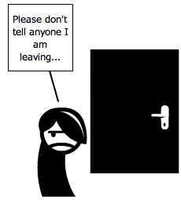

chapter8.1--handout
Background Information
Holy Grail 圣杯
...but now he found that he had committed himself to the following of a grail.（但是现在他发现他已经把自己献身于追求一种理想。）
the following of a grail翻译成了“追求一种理想”，这里是取grail的引申义：“努力追去的目标，渴望之物”（something that a person is trying very hard to obtain or achieve）. 但grail本身是指“圣杯”（也写作holy grail）, 是宗教传说中的圣物。
圣杯来源于基督教的传统，指在公元33年，犹太历尼散月十四日，也就是耶稣受难前的逾越节晚餐上，耶稣遣走加略人犹大后和11个门徒所使用的一个葡萄酒杯子（the drinking glass used by Jesus at the Last Supper）. 耶稣曾经拿起这个杯子吩咐门徒喝下里面象征他的血的红葡萄酒，借此创立了受难纪念仪式。
因此后来有些人认为这个杯子因为这个特殊的场合而具有某种神奇的能力。比如很多传说相信，如果能找到这个圣杯而喝下其盛过的水就将返老还童、死而复生并且获得永生，这个传说还广泛延续到很多文学、影视、游戏等作品中。
目前在欧洲大约有200个古酒杯被认为可能是传说中的圣杯，著名的有瓦伦西亚大教堂的瓦伦西亚圣杯（Valencia Chalice）、圣老楞佐主教座堂的热那亚圣杯（Genoa Chalice）等。
Vocabulary
stratum
n. 地层；岩层；社会阶层 (a layer of rock or earth; a social class in a society)
原文：...he let her believe that he was a person from much the same stratum as herself...
让她相信他的出身跟她不相上下……
💧stratum 可以指地质学上的“岩层”，也可以指“社会阶层”，其复数形式是strata. 比如“社会各阶层人士”除了我们熟悉的people from all walks of life, 还可以表达为people from all social strata.
pretense
n. 借口；假装；（无事实根据的）要求；自称 (a way of making people believe something that is not true)
原文：He might have despised himself, for he had certainly taken her under false pretenses.
他也许应该鄙视自己的，因为他确实用欺骗的手段占有了她。
💧pretense 作为pretend的名词表示“假装”，原文中的under/on false pretenses则是“以欺诈手段，以虚假的借口”，比如：You brought me here under false pretenses!
你用借口把我骗到了这里！
Crush Your Problems
1、It was this night / that he told me the strange story / of his youth with Dan Cody — / told it to me / because “Jay Gatsby” / had broken up like glass / against Tom’s hard malice, / and the long secret extravaganza / was played out.
就是这天夜里，他把他跟丹·科迪度过的年轻时代的离奇故事告诉了我，因为"杰伊·盖茨比"已经像玻璃一样在汤姆的铁硬的恶意上碰得粉碎，那出漫长的秘密狂想剧也演完了。
💧表达精讲
① “Jay Gatsby” had broken up like glass against Tom’s hard malice “‘杰伊·盖茨比’已经像玻璃一样在汤姆的铁硬的恶意上碰得粉碎”；“Jay Gatsby”是代表了Gatsby精心编织的一切，包括他给自己打造的新身份（17岁的时候他把自己的名字从James Gatz改为Jay Gatsby）; hard malice指“冷酷的恶意 ”，hard从“坚硬的”引申为“冷酷无情的”，这里指Tom在纽约的时候毫不留情地拆穿了Gatsby的谎言；
②the long secret extravaganza was played out “那出漫长的秘密狂想剧也演完了”；extravaganza指“盛大、华丽的表演”，并且内容往往是荒诞狂妄的，这里指Gatsby对Daisy长达5年的爱恋，尤其是他为了赢得Daisy而做的一切浪漫铺张的举动；played out即finished;
这里暗示了Gatsby的失败（downfall），两方面：在纽约的聚会上，Tom让Gatsby看清了Daisy并没有那么爱他（Daisy doesn't love Gatsby as he loves her）; Gatsby在Daisy家门口守候到了清晨4点，结果什么也没有发生（Tom和Daisy之间没有发生Gatsby预想甚至期待的问题）。
2、In various unrevealed capacities / he had come in contact / with such people, / but always / with indiscernible barbed wire between.
他以前以各种未透露的身份曾和这一类人接触过，但每次总有一层无形的带刺的铁丝网隔在中间。
💧句式拆解
①In various unrevealed capacities是介词结构前置，修饰的是主语he;
②with...wire between后面省略了them (he and such people).
💧表达精讲
①various unrevealed capacities “各种未透露的身份”；unrevealed即“隐瞒的，未透露的”（secret, undisclosed）; capacities在这里指“身份，角色”（identities, roles）;
②come in contact with “和……发生接触”（to meet up with, to encounter）;
③with indiscernible barbed wire between “有一层无形的带刺的铁丝网隔在中间”；indiscernible指“难以察觉的”（very difficult to see or notice）; barb作名词指“（箭头或鱼钩上的）倒钩”，barbed也就是“带刺的”，平时的住宅区或者危险重地都有这种带刺的铁丝网。
Gatsby透露自己曾经梦想并努力尝试进入上流社会。但是在跟“这类人”（such people, 也就是和Daisy一样身份地位的女孩）接触的过程中，他感到了距离和排挤，唯独Daisy是第一位“nice” girl. (She was the first “nice” girl he had ever known.) “nice”在这里是双关：一是指出身高贵、家境富裕；二是没有对Gatsby流露出明显的鄙夷和苛刻。
3、It amazed him — / he had never been / in such a beautiful house before, / but what gave it an air of breathless intensity, / was that Daisy lived there — / it was as casual a thing to her / as his tent out at camp was to him.
她的家使他惊异——他从来没进过这样美丽的住宅，但是它之所以有一种扣人心弦的强烈的情调却是因为她住在那里——这房子对于她就像他在军营里的帐篷对于他一样地平淡无奇。
💧句式拆解
it was as casual a thing to her as his tent out at camp was to him 是同级比较结构，as casual a thing相当于such a casual thing; was to him中间省略了a casual thing;
改写如下：it was such a casual thing to her as his tent out at camp was a casual thing to him.
💧表达精讲
an air of breathless intensity “扣人心弦的强烈氛围”；breathless在这里指“激动人心的，摄人心魄的”；intensity本义指“（程度上）剧烈”或是“（感情，观点）强烈”，这里强调Daisy家的富丽堂皇给人以强烈的震慑感。
4、There was a ripe mystery about it, / a hint / of bedrooms up-stairs more beautiful and cool than other bedrooms, / of gay and radiant activities taking place through its corridors, / and of romances that were not musty and laid away already in lavender / but fresh and breathing / and redolent / of this year’s shining motor-cars / and of dances whose flowers were scarcely withered.
这房子充满了引人入胜的神秘气氛，仿佛暗示楼上有许多比其他卧室都美丽而凉爽的卧室，走廊里到处都是赏心乐事，还有许多风流艳史——不是霉烘烘、用薰衣草保存起来的，而是鲜活的、芳香四溢的，使人联想到今年的雪亮的汽车、联想到鲜花还没凋谢的舞会。
💧句式拆解
①我们先来看主句：There was a ripe mystery about it, a hint of... (a hint of在这里可以理解为mystery的同位语，对mystery作进一步的解释)；
②在主句之外，剩下的就是以a hint为中心的三个介词结构：of bedrooms..., of gay and radiant activities..., and of romances...
③而romances后面的部分则是that引导的定语从句，专门修饰romances：that were not...but...
可以反复对照讲解和原文来划清句子层次哦~下面会具体分析表达↓
💧表达精讲
①a ripe mystery “引人入胜的神秘气氛”；ripe本义指“（果实）成熟的”，引申为“芳醇的”（mellow）, 在这里指Daisy家所散发的神秘气氛令人不自觉想靠近；
②gay and radiant activities “赏心乐事”；gay和radiant在这里都表示“喜悦的”，radiant尤指“（因为幸福）而容光焕发的”；
③of romances that were not musty and laid away already in lavender “这些风流韵事不是霉烘烘、用薰衣草保存起来的”；romances作为复数形式表示“风流韵事”（love affairs）; musty指“发霉的”（must作名词指“霉臭，霉菌”）；lay away指“囤积”（to store or reserve for future use）; in lavender指“用薰衣草（作为除臭剂）来保存”；
④but fresh and breathing and redolent of this year’s shining motor-cars and of dances whose flowers were scarcely withered “而是鲜活的，使人联想到今年崭新锃亮的汽车、 联想到鲜花仍未凋零的舞会”（注意这里形容的是romances）；fresh and breathing指“鲜活的”，redolent of指“使人想起……的”，相当于reminiscent of.
5、He felt their presence / all about the house, / pervading the air / with the shades and echoes / of still vibrant emotions.
他感到她家里到处都有他们的存在，空气中弥漫着仍然颤动的感情的阴影和回声。
💧表达精讲
①their presence all about the house “家里到处都有他们的存在”；“他们”指在Gatsby之前已经爱上Daisy的男人们（“many men had already loved Daisy”）; about相当于around.
②pervading the air with... “空气中弥漫着……”；pervade可以形容“（感情、想法或气味）弥漫于，遍及”，比如：A spirit of hopelessness pervaded the country. 一种无望的情绪笼罩着该国。
③the shades and echoes of still vibrant emotions “仍然颤动的感情的阴影和回声”；shades即“阴影”（shadows）; echoes即“回声”，也可以理解为“痕迹”（traces）; vibrant指“充满活力的”（lively, full of energy）.
6、As a matter of fact, / he had no such facilities — / he had no comfortable family / standing behind him, / and he was liable / at the whim of an impersonal government / to be blown anywhere / about the world.
实际上，他并没有这种能力——他背后没有富裕的家庭撑腰，而且只要全无人情味的政府一声令下，他随时都可以被调到世界上任何地方去。
💧表达精讲
①facilities 本义是“设施，设备”，引申为“天资，才能”（talents）, 这里指Gatsby没有优越的家庭背景；
②comfortable family “富裕的家庭”；comfortable在这里不是“舒服的”，而是having enough money to be able to live without financial problems.
③was liable...to be blown anywhere “很有可能被调去任何地方”；be liable to相当于be likely to;
④at the whim of an impersonal government “只要全无人情味的政府一声令下”；at the whim of表示“配合……的步调”，whim指“突发的念头，一时的兴致”，on a whim就是“一时心血来潮”啦~比如：I didn’t leave just on a whim.（我不是一时心血来潮离开的。） impersonal指“没有人情味的”（unfriendly,not showing sympathy）.
7、They had never been / closer in their month of love, / nor communicated more profoundly one with another, / than / when she brushed silent lips against his coat’s shoulder / or when he touched the end of her fingers, gently, as though she were asleep.
她用无言的嘴唇拂过他上衣的肩头，或者他温柔地碰一碰她的指尖，仿佛她是在睡梦之中，他俩在这一月的相爱中从来没有像这样亲密过，也从来没有像这样深刻地互通衷曲。
💧句式拆解
这个句子包含了一个否定比较结构：They had never been closer...nor (had they) communicated more profoundly..., than when she brushed...or when he touched...
had they属于省略的部分，和前面的过去完成时保持一致（注意nor后面需使用倒装）。
💧表达精讲
brushed silent lips against his coat’s shoulder “用无言的嘴唇拂过他上衣的肩头”；brush...against... “轻拂，掠过”，比如：I felt her hair brush against my arm. 我感到她的头发轻拂过我的胳膊。
Content Analysis
Gatsby给Nick详细描述了他和Daisy第一次见面的情景：Gatsby和军营里的其他军官一起到Daisy家，他第一眼就被里面的富丽堂皇震慑住了。后来两人坠入爱河，并且也有过非常甜蜜的幽会。接着Gatsby被派到前线。原本应该顺利返程的他，因为一些差错又被送到了牛津。这时候的Daisy已经无法按捺了，于是重新投身于社交场合，并在Tom出现后闪电结婚。
透过Nick的笔触和视角，我们可以发现在Gatsby和Daisy的感情中有两个非常重要的前提，这也解释了为什么Daisy这样的富家女会爱上穷小子Gatsby, 以及Gatsby对Daisy为什么会有如此强烈的欲望和执念——
💧Clue 1: Gatsby has been cheating Daisy about some parts of himself.
Gatsby对Daisy并没有绝对的坦诚，至少他有意地让Daisy相信了自己和她能够门当户对：
Evidence 1: However glorious might be his future as Jay Gatsby, he was at present a penniless young man without a past, and at any moment the invisible cloak of his uniform might slip from his shoulders.
但是，他明白他之所以能出入黛西家里纯粹是出于偶然，不管他作为杰伊·盖茨比会有何等的锦绣前程，目前他只是一个默默无闻、一文不名的青年人，而且他的军服——这件看不见的外衣随时都可能从他肩上滑落下来。
Gatsby在踏入Daisy家的那一刻，就知道了这是一个仅靠自己原本的出身绝对无法高攀的地方。在他过往的接触中，他已经尝到了什么是不可逾越的鸿沟（but always with indiscernible barbed wire between “总有一层无形的带刺的铁丝网隔在中间”）。但Gatsby与众不同的地方就在于，他有着蓬勃的野心和永远活力充沛的幻想。所以他选择了提前把这个幻梦“实现”，他让Daisy相信自己能够给她足够的安全感，尤其是物质上的。
Evidence 2: I don’t mean that he had traded on his phantom millions, but he had deliberately given Daisy a sense of security; he let her believe that he was a person from much the same stratum as herself — that he was fully able to take care of her.
他也许应该鄙视自己的，因为他确实用欺骗的手段占有了她，我不是说他利用了他那虚幻的百万家财。但是他有意给黛西造成一种安全感，让她相信他的出身跟她不相上下——相信他完全能够照料她。
我们不知道Gatsby到底跟Daisy说了什么，只能猜测他并没有直接假意宣扬自己有多少财产，而是用很巧妙的方法俘获了Daisy的芳心。
💧Clue 2: Gatsby is not only hooked by Daisy herself.
在Gatsby和Daisy的关系中，Gatsby的感情可能要复杂的多。他在不经意间也透露了自己起初爱上Daisy其实还有其他的原因——
Evidence 1: It excited him, too, that many men had already loved Daisy — it increased her value in his eyes.
同样使他激动的，还有很多男人都曾经爱过黛西。这抬高了Daisy在他眼里的价值。
Gatsby爱上Daisy不是没有虚荣心在作祟的。他看到Daisy住在这样华丽的屋子里，并且举手投足间都是富家子女才有的傲然自恃（it was as casual a thing to her as his tent out at camp was to him “这房子对于她就像他在军营里的帐篷对于他一样地平淡无奇”）。而他从来没有这种物质富足所带来的满足和自信，所以燃起了渴望和向往。更何况这个女孩还是大家都竞相追求的对象。
Evidence 2: But he didn’t despise himself and it didn’t turn out as he had imagined. He had intended, probably, to take what he could and go — but now he found that he had committed himself to the following of a grail.
但是他并没有鄙视自己，事情的结果也出乎他的意料。他起初很可能打算及时行乐，然后一走了之——但是现在他发现他已经把自己献身于追求一种理想。
Gatsby并没有因为对Daisy的欺骗而鄙视自己，相反，他越来越深陷其中。而且，他还发现了另一件吸引他的事，就是实现一个理想：发家致富，直到自己可以理所应当地站在Daisy身边。 这也暗示了比起得到Daisy本身，让Gatsby着迷其中的，还有他的自我满足和成就感。
Today's Bonus
💧和国家/民族有关的复合短语
原文：Throwing open the French windows of the drawing-room, we sat smoking out into the darkness.
French windows在这里可不是指“法国的窗”哦~正解是“落地窗”。当然落地窗并不是跟法国完全没有关系，它起源于French doors, 时间大概是17世纪。当时这种门是由一块块独立的玻璃和木板镶嵌而成的（constructed of individual, single paned pieces of glass and wood）, 看起来更像窗户而不是门，所以有了French windows的叫法。
在英语里还有不少类似和国家/民族有关的短语，但是从字面上是猜不出意思的哦~我们一起来看看吧！
1、French leave 不告而别
这个短语原本是在军队中使用的，表示“不打报告而擅自离开、开小差”。引申到日常生活就是“擅自离开，不辞而别”，但这种行为在西方文化里是非常不礼貌的，尤其是在参加聚会的时候，一般离开的时候一定要先跟主人打招呼。
例句：Did she take French leave at the party last Saturday?
她在上星期六的宴会中不告而别吗？

2、Indian giver 送礼物后又讨回的人
这个短语源自美国土著印第安人的传统习惯。印第安人没有货币和金钱的概念，他们的经济交易方式是以物易物。所以在他们的观念中，礼物也是商品交换的一种。只要在得到等价交换的礼物回礼时（equivalent value in return）, 他们才会送出礼物。如果对方没有等价礼物回赠，那送出的礼物可能会被拒绝或是归还。
例句：Toby may have given you these books, but don't start celebrating yet. He's famous for being an Indian giver.
托比可能送给你这几本书了，但是不要高兴的太早。他送东西又往回要，是出了名的。
3、Spanish athlete 爱吹牛的人
6世纪，西班牙建立了强大的海军，认为自己战无不胜，简直无敌。后来被英国打败，英国人便嘲笑西班牙人爱吹牛。当时的西班牙运动员在比赛前也喜欢说大话，但结果往往不如预期，因此“Spanish athlete”就有了“爱吹牛皮的人”的意思。
例句：Jack has been a Spanish athlete since he was 5!
杰克从 5 岁开始就很爱吹牛了！
4、Greek gift 图谋害人的礼物
该词组源自《木马屠城记》：在特洛伊战争中，希腊人将藏满士兵的木马送进特洛伊城，灭亡了特洛伊。所以“Greek gift”指“图谋害人的礼物”，其实也就是汉语里的“黄鼠狼给鸡拜年——不安好心”~
例句：Ware his gift, that is a Greek gift!
小心他的礼物，那是包藏杀机的礼物！